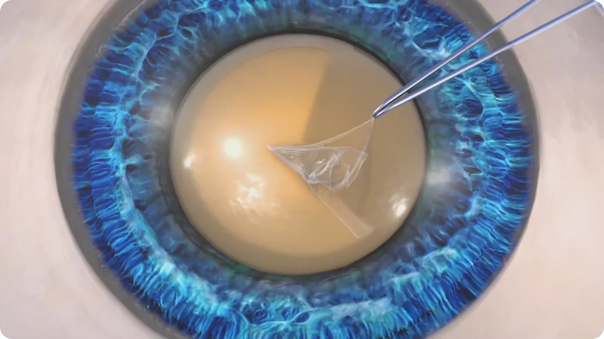
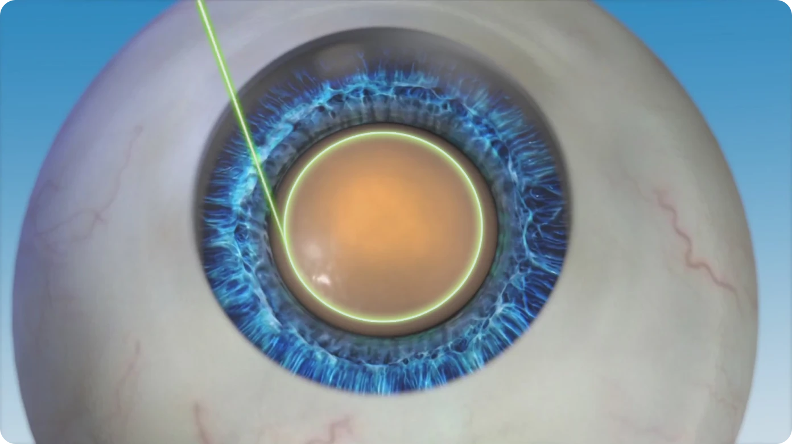

칼을 사용하여 각막을 절개하고 초음파로 수정체를 파쇄하여 제거하는 수술법입니다.
LENSAR® 는 백내장 수술에서 각막 절개, 전낭 절개, 수정체 핵 분쇄 등의 과정을 레이저로
정교하게 보조하는 장비입니다. 환자의 눈 구조를 반영해 수술 계획을 세우는 데 활용되며,
수술의 정밀도를 높이는 데 도움을 줍니다.
펨토초 레이저 기반 수술시간 단축,
빠른 회복 지향 임상 연구
전낭 절개 및 핵 분쇄 과정의
정밀도
향상 임상 연구
난시 교정을 고려한 수술
설계 가능
일반 백내장 수술
칼을 사용하여 각막을 절개하고 초음파로 수정체를 파쇄하여 제거하는 수술법입니다.

수정체 전낭절개 | 일반 백내장 수술
백내장을 제거하기 위한 사전 절차인, 전낭절개 역시 일반 백내장 수술의 경우 의사가 손으로 직접 진행합니다.
레이저를 이용한 백내장 수술
각막을 절개부터 수정체 파쇄까지 레이저로 진행하는 수술법입니다.

수정체 전낭절개 | 레이저 이용수술
백내장 수술 시 레이저가 수정체 전낭을 정교하게 절개합니다.
왼쪽으로 스와이프
환자 맞춤형
각막손상 억제
난시 교정
수술시간과 회복기간 단축, 통증 감소,
환자와 보호자 모두 안심